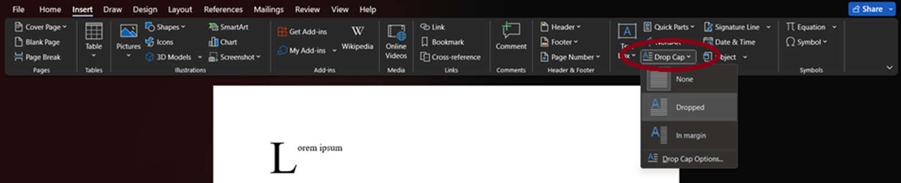
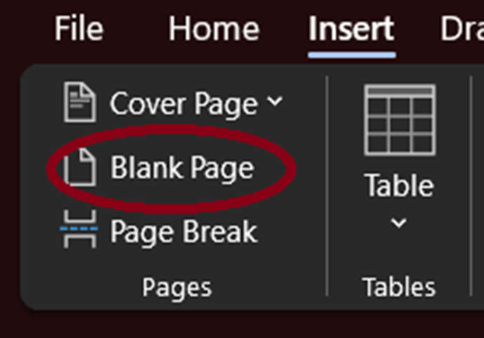
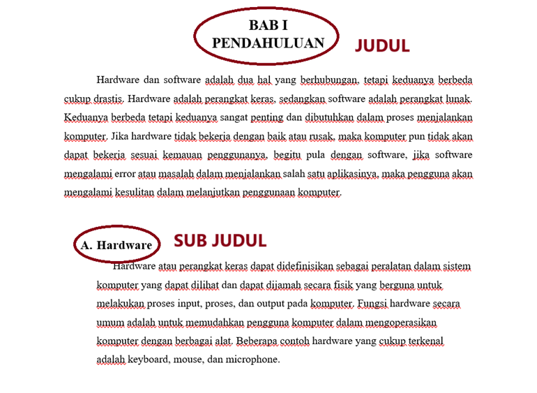
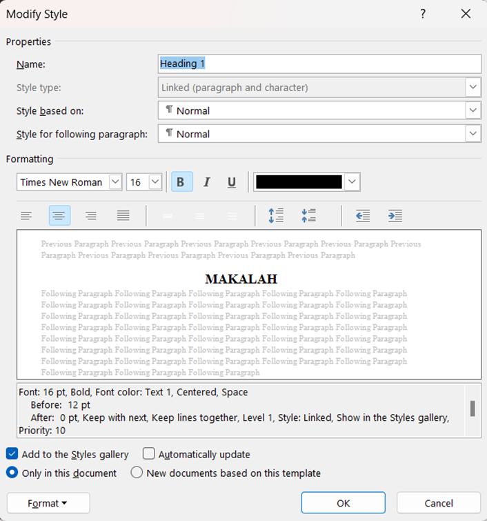
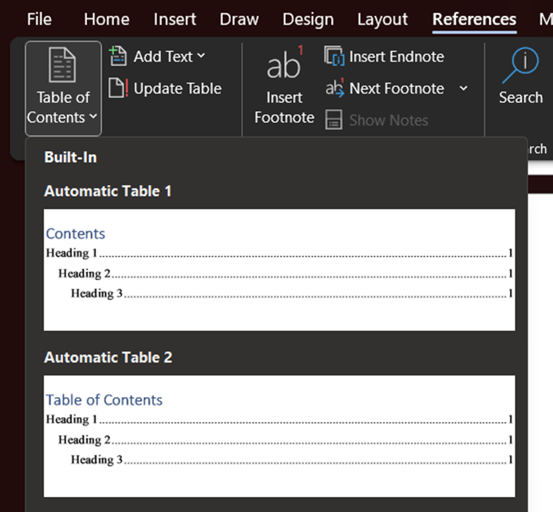
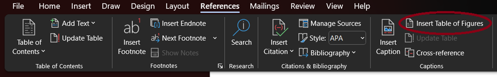
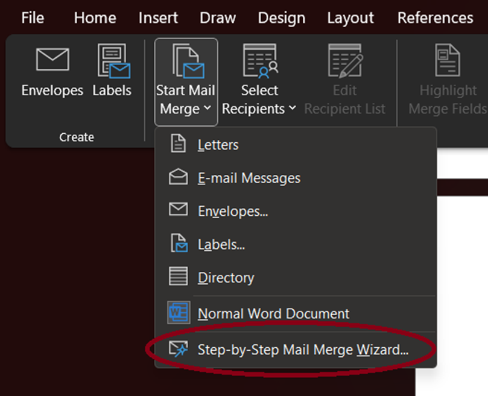
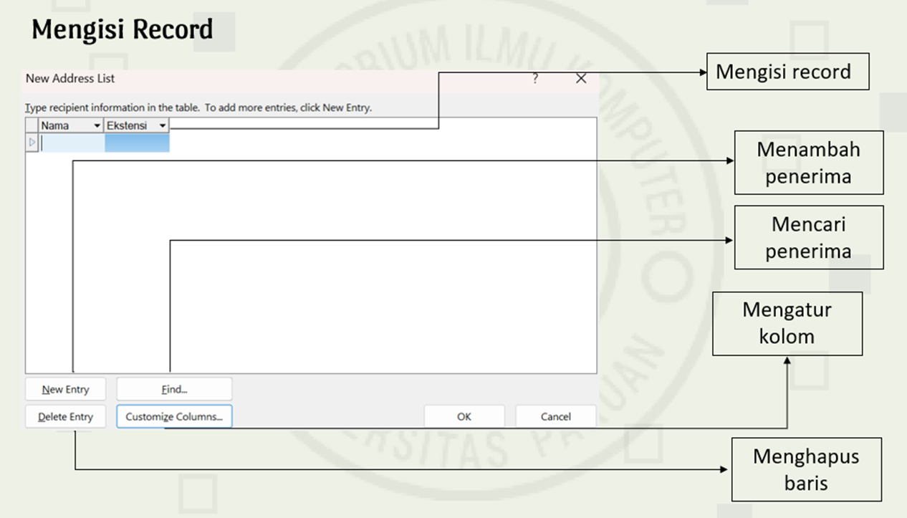

Microsoft Word
Microsoft Word, adalah perangkat lunak yang di gunakan untuk pengolahan teks, dokumen, laporan dsb.
1. Shortcut Pada Microsoft Word
- Bold/Tebal = Ctrl + B
- Italic/Miring = Ctrl + I
- Underline/Garis Bawah = Ctrl + U
- Center/Rata Tengah = Ctrl + E
- Left/ Rata Kiri = Ctrl + L
- Right/Rata Kanan = Ctrl + R
- Justify/Rata Kiri Kanan = Ctrl + J
- Open/Buka = Ctrl + O
- Save/Simpan = Ctrl + S
- Close/Tutup = Ctrl + W
- Cut/Potong = Ctrl + X
- Copy/Salin = Ctrl + C
- Paste/Tempel = Ctrl + V
- Select All/Pilih Semua = Ctrl + A
2. Drop Cap
Drop Cap, adalah huruf pertama pada paragraf yang memiliki ukuran yang sangat besar dan lebih dari huruf lainnya.
Fungsi Drop Cap, adalah membuat teks agar lebih menarik sehingga bisa memancing perhatian para pembaca tanpa membuat pembaca tersebut merasa terganggu. Namun, dokumen resmi seperti skripsi, makalah atau karya ilmiah lainnya tidak menggunakan drop cap pada penulisan dokumennya.
2.1 Cara Mengaplikasikannya
- Pada Tab Insert, Pilih Drop Cap
- Lalu Pilih Style Drop Cap Yang Di Inginkan 
3. Pembuatan Makalah
Dalam pembuatan suatu makalah, diperlukan struktur pada penyusunannya. Struktur tersebut diantaranya :
- Cover
- Kata Pengatar
- Daftar Isi
- Daftar Gambar (Jika Ada)
- Daftar Tabel (Jika Ada)
- Bab 1 : Pendahuluan
- Bab 2 : Pembahasan
- Bab 3 : Kesimpulan
- Daftar Pustaka
3.1 Pembuatan Daftar Isi
- Siapkan Halaman Baru Terlebih Dahulu Pada Tab Insert, Pilih Blank Page 
- Gunakan Heading 1 Pada Styles Untuk Judul dan Heading 2 Untuk Sub Judul 
- Atur Style Pada Heading, Klik Kanan Pada Menu Heading, Lalu Pilih Modify 
- Font : Times New Roman
- Size 16
- Centered
- Add To The Styles Gallery
- Buka Tab Reference, Pilih Table Of Contents
- Pilih Daftar Isi Yang Di Inginkan 
- Jika Ada Perubahan Pada Konten Makalah, Maka Daftar Isi Perlu Di Update
- Klik Daftar Isi, Pilih Update Table, Update Entire Table

3.2 Pembuatan Daftar Gambar
- Masukkan Gambar Yang Di Inginkan
- Buka Tab Insert, Pilih Pictures, Pilih This Device
- Klik Kanan Pada Gambar, Pilih Insert Caption
- Beri Label Gambar
- Tulis Caption Yang Di Inginkan
- Buka Tab Reference, Pilih Insert Table of Figures 
3.3 Pembuatan Daftar Tabel
- Untuk Memberi Caption Tabel, Blok Tabel
- Klik Kanan Pada Tabel, Pilih Insert Caption
- Tulis Caption Gambar Yang Di Inginkan
- Lalu Buka Tab Reference, Pilih Insert Table of Figures
4. Mail Merge
Mail Merge, adalah suatu fungsi yang digunakan untuk menghasilkan beberapa surat, label, amplop, tag nama, dan lainnya menggunakan informasi yang disimpan dalam daftar, database, atau spreadsheet.
4.1 Cara Mengaplikasikannya
- Buka Tab Mailings
- Pilih Start Mail Merge
- Pilih Step-By-Step Mail Wizard 
- Pilih Tipe Dokumen Yang Akan Di Buat, Lalu Next
- Pada Select Starting Document, Pilih Use The Current Document, Lalu Next
- Pada Select Recipients, Pilih Type a New List, Lalu Create 
- Setelah Selesai Mengisikan Record Maka Akan Terbuat Data Baru Yaitu *.Mdb
- Pada Mail Merge Recipients, Klik OK
- Pada Tab Mailings, Pilih Insert Merge Field Yang Di Butuhkan
- Untuk Menampilkan Hasil, Pilih Review Result
- Jika Telah Selesai Pilih Finish & Merge